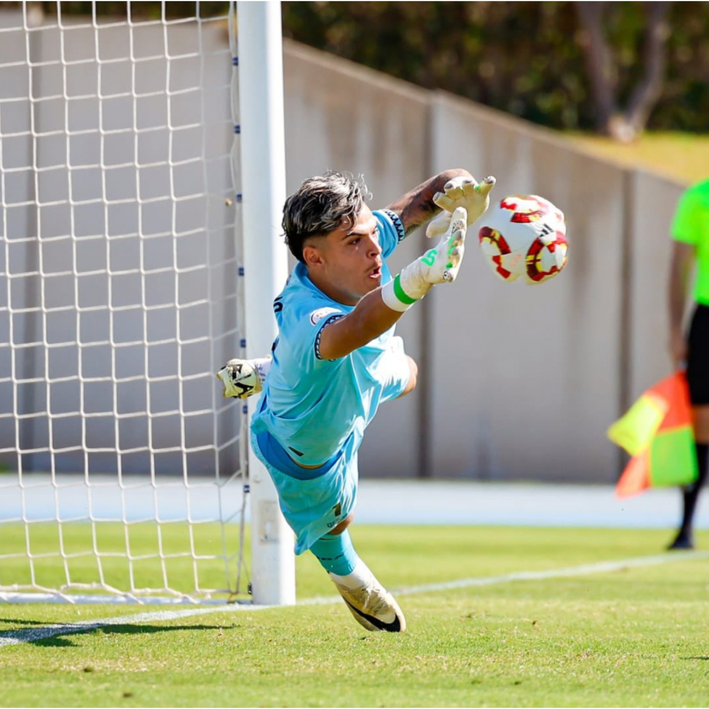

Bruno Iribarne: “Vengo a trabajar de tú a tú, a demostrar quién soy”
El portero almeriense firma con el Burgos CF por las próximas 4 temporadas con el objetivo de competir por el puesto a Ander Cantero y seguir creciendo como futbolista.
El internacional español de 22 años ha sido presentado oficialmente como nuevo jugador del conjunto castellano esta mañana ante los medios de comunicación. Llega traspasado al Burgos CF procedente del Almería a coste 0, siendo una apuesta de cara al futuro, como bien ha afirmado Michu: “Tenemos portero para muchos años”.
El club andaluz se guarda un 30% de sus derechos de una futura venta. Es decir, el Burgos CF ha adquirido un 70% en propiedad.
Inscrito ya en la plantilla, estará disponible para la primera salida de la temporada de este domingo frente al Sporting de Gijón, correspondiente a la segunda jornada de la Liga Hypermotion.
Uno de los motivos por los que hoy es blanquinegro ha sido la confianza depositada por el director deportivo en él: “Desde el primer momento que hablé con Michu me transmitió mucha confianza”.
Viene con hambre a intentar hacerse con el puesto de portero titular que ocupa el Zamora de la pasada temporada, Ander Cantero: “Vengo a trabajar de tú a tú, a demostrar quién soy”, además de buscar una continuidad que no tuvo el año pasado con el Almería: “La situación de la temporada pasada se dio así, pero aquí vengo a demostrar quién soy”, incide el portero canterano del Real Madrid.
En referencia a sus compañeros, con los que ya ha podido entrenar y ver desde la grada de El Plantío, habla de que “es un grupo joven muy bueno, con hambre de hacer cosas grandes”.
Para acabar su intervención, ha definido sus características como jugador: “Soy un portero con mucha personalidad, hábil con los pies y rápido bajo palos”.
Además de la presentación de Bruno, Miguel Pérez Cuesta ha repasado la actualidad del equipo en cuanto al mercado se refiere, dejando claro que “100 por 100 va a haber salidas, como puede ser la de Mateo Mejía en calidad de cedido, y 100 por 100 va a haber llegadas”, a priori, un delantero y un mediocentro, aunque ya ha comentado que están atentos al mercado por si puede haber otra operación que pueda beneficiar los intereses del club.